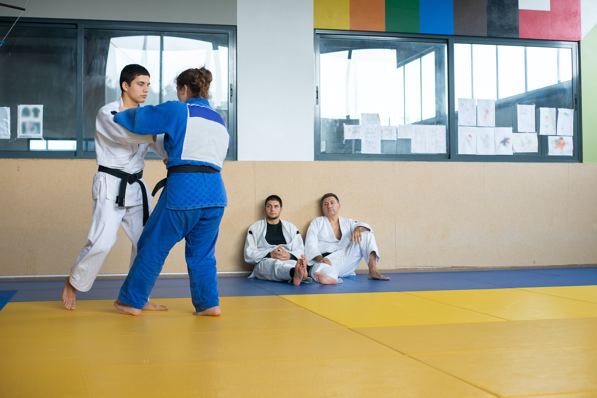
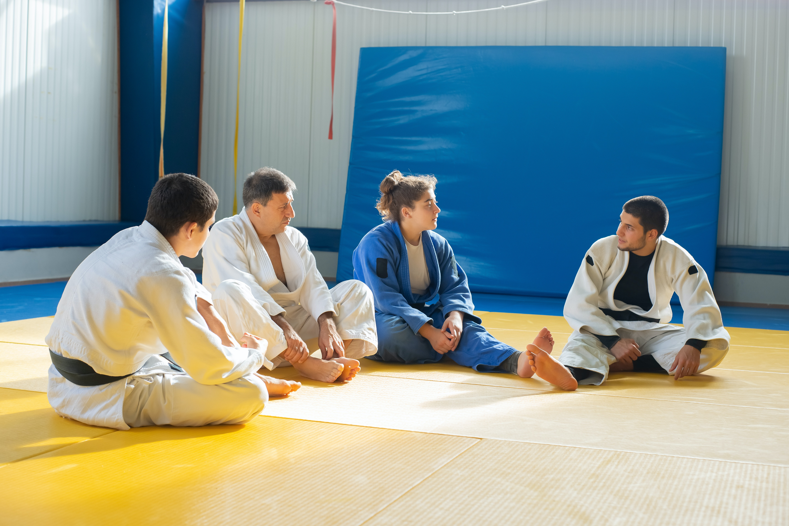
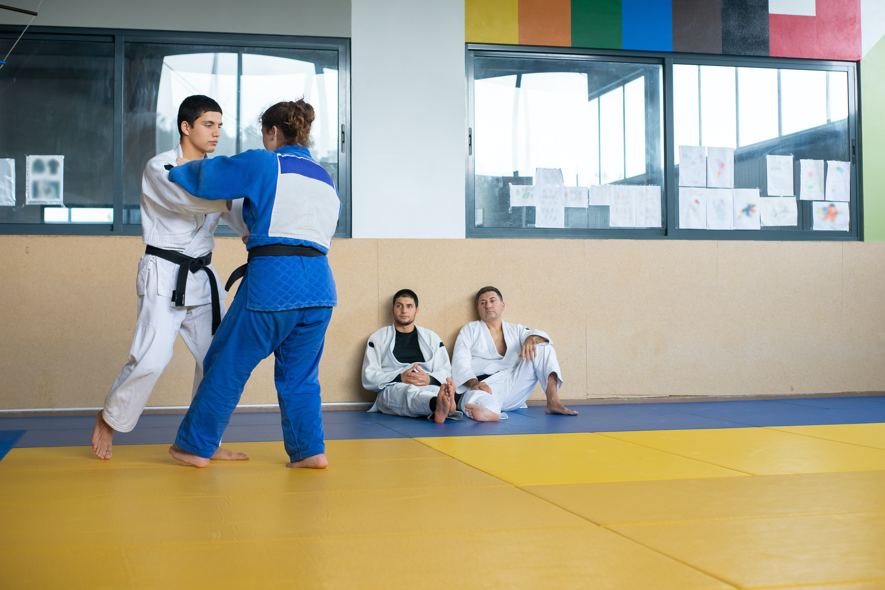
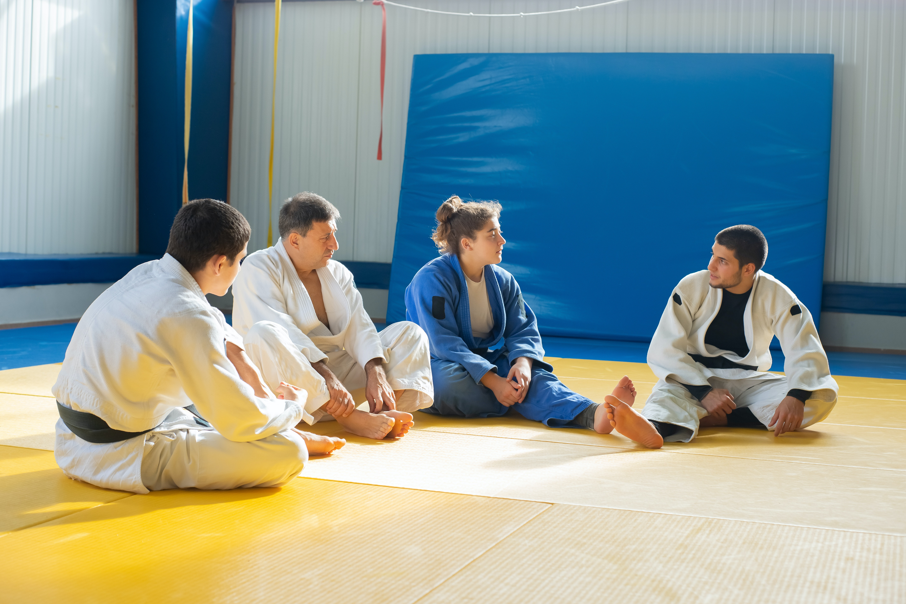

Bem-vindo à nossa academia de judô! Nós ensinamos e promovemos os benefícios do judô, que incluem melhoria na saúde física e mental, aumento da autoconfiança e autodisciplina, e desenvolvimento de habilidades sociais e de resolução de conflitos. Com instrutores experientes, estamos empenhados em ajudar os alunos a alcançar seus objetivos pessoais. Junte-se a nós e descubra os benefícios do judô para uma vida mais equilibrada e saudável.
O Judô oferece inúmeros benefícios mentais, emocionais e sociais, incluindo: aumento da autoconfiança e autoestima, desenvolvimento da disciplina e autodisciplina, melhoria na concentração e foco, redução do estresse e ansiedade, aprendizado de habilidades de resolução de conflitos e negociação, fortalecimento das relações interpessoais e construção de amizades duradouras.
VENHA NOS VISITAR!